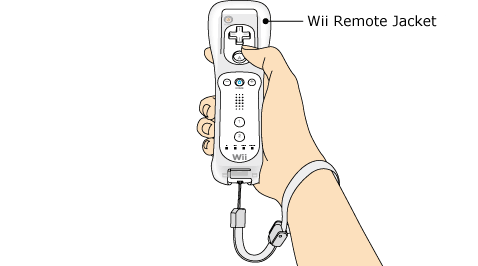

3 |
Controller Setup |
 |
How to hold a controller depends on its type. Use the controller as shown in the following images. Note: For information about how to attach the wrist strap and Wii Remote Jacket, refer to the Wii Operations Manual or the instruction manual for the Wii Remote Jacket.

IMPORTANT: Always use the wrist strap when using the Wii Remote. See page 2 Usage Precautions. Note: Always refer to the instruction manual for each controller that you use. |
 |
 |
 |